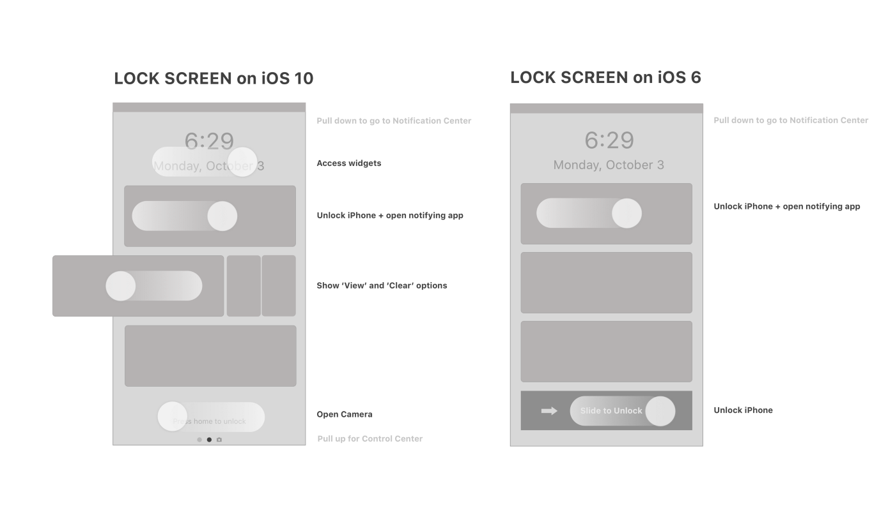

Hello World
CodeTengu Weekly 碼天狗週刊
CodeTengu Weekly 會在 GMT+8 時區的每個禮拜一早上 10:00 出刊，每一期會從目前的 curator 名單中選出三位來負責當期的內容，每個 curator 各自負責不同的領域。如果你在這一期沒有看到自已感興趣的東西，說不定下一期就會有了。你也可以瀏覽一下前幾期的內容。
以下是目前的 curator 陣容：
- @vinta - I failed the Turing Test - 科幻迷。最近在讀 We Are Legion (We Are Bob)
- @saiday - Imnotyourson - 妙蛙種子破音
- @tzangms - Oceanic / 人生海海 - 衝動型購物
- @fukuball - ImFukuball - GCP 好用嗎？
- @mingderwang - Ethereum enthusiast
- @kako0507 - 熱愛嘗試新事物的前端工程師
- @chiahsien - 我們在找 iOS 工程師與其它人才，歡迎來跟我當同事
- @hiroshiyui - 沒有人是一座孤島
- @uranusjr - Smaller Things - 不愛談技術的技術人，最近對做菜很有興趣
- @kkdai - 態度萬歲 - 喜歡 Golang 的略懂工程師
- @yhsiang
大家也可以關注我們的 Facebook、Twitter、GitHub 或微博，有很多 Weekly 看不到的內容。有任何建議或疑問也可以來 Gitter 聊聊，歡迎亂入 👺
 @uranusjr
@uranusjr
Asynchronous Python
這篇文章簡單介紹了異步程式的概念，以及異步程式中的技術與 paradigms，並帶出許多常見的關鍵字，例如 greenlets、event loop、callbacks、coroutines 等等。
異步程式並不難，但它是許多過去技術的結合，所以我們在介紹它時，常會扯到太多相關的東西；沒有相關背景知識的人會因此卻不，因為一上來就聽不懂了。這篇文章很適合當起點。看完了大概還是不會寫異步程式，但可以藉此知道一些基礎知識，把學習曲線降低後，就不會被其他文章搞得昏頭轉向。
The decline of Stack Overflow
你看 Stack Overflow 嗎？這是個蠢問題，現在哪個寫程式的人不看 Stack Overflow。但你有在上面問過問題嗎？你有在上面解答過別人的問題嗎？
根據 2015 年六月的數據，Stack Overflow 目前有超過四十萬註冊使用者，以及將近十萬個問題。但根據 2013 年的研究，77% 的使用者只問過一個問題，65% 只回答過一個問題，只有 8% 使用者回答超過五個問題。這個參與數據對一般網站是非常糟糕的數據，作者認為代表 Stack Overflow 的衰敗。
就我自己的經驗，Stack Overflow 確實在許多方面有問題。它的 single sign-on 機制非常糟糕（雖然現在似乎修好了），新使用者登入之後的動線也非常不明確。即使你找到了可以回答的問題，Stack Overflow 的規則也會讓你難以完整、正確地回答，而容易被其他使用者搶快。重複的回答，即使更完整或更正確，只要速度輸人，就很容易得到負面評論、甚至 downvote。沒有得到 accepted 回答的舊問題也缺乏管理，很多問題其實早已有好的回答，但只要發問人沒有回來 accept，它們永遠都會維持 unanswered 狀態。
如果你想問問題，情況也不太好。站上已有的問題數量很容易讓 moderators 找到相似的舊問題，進而將你的問題提報為 duplicate——即使它們並不是。Stack Overflow 完全民主、公開、存粹只靠分數決定使用者權力的規則，讓 moderators 完全不需相關領域經驗，也可以審查所有文章。只要有規則，就會有玩弄規則的人。這兩個因素結合起來，使得 Stack Overflow 充斥著專業不足，又擁有過大權力、無法制衡的 privileged trolls。
當然，Stack Overflow 仍然是非常成功的網站。他為我們帶來極大量、非常有用的資源，原文下面的留言有非常多的成功案例，許多有名氣的使用者也指出它在許多方面仍然做得非常好。這些都是真的，毫無疑問。最近新推出的文件功能也能夠活用這些零碎資源，組織成更有系統的知識。這也是好事。但它最原本的目的 ——問答網站——也似乎確實走到了瓶頸，那套 Atwood 引以為傲、從遊戲發想的完全公開、民主、有機、自治系統，在 scaling 上也顯現疲態，似乎需要重構。我們需要 Stack Overflow，過去如此，現在如此，未來也仍然如此。但它並非完美，仍然需要反省與改善。

A critical analysis of the iOS 10 lockscreen experience
iOS 10 最大的改變應該是 lock screen 吧，畢竟它是所有使用者最常看到的畫面。作者詳細分析了 iOS 9 與 10 裡 lock screen 的差別，並評價各種操作模式的優劣。幾個教訓：
- 在可以水平捲動的視窗中加上水平滑動手勢不是個好主意。
- 尼爾森啟發法告訴我們：
- 好的錯誤訊息很重要，但以細心設計避免錯誤產生則更為優秀。
- 使用者不應需要理解不同字詞、狀況、動作是否代表同一件事。
- 在不同 z-index 中加上多餘的訊息，會導致過度複雜的概念模型。
- 過少的視覺提示與標誌可能造成錯誤使用。
 @kkdai
@kkdai
[影片] GopherCon 2016: Renee French - The Go Gopher A Character Study
Rob Pike 的老婆 Renée French 也就是眾所皆知的 Gopher 圖形發明者，
講解了 Gopher 的發明過程．這段影片沒有任何程式碼但是相當有趣．
也可以看到許多可愛的 Gopher 圖案，還有 Gopher 圖案的設計規範與理念．
Take a REST with HTTP/2, Protobufs, and Swagger
GRPC 大家用了沒？ 是不是因為還不想把手邊的 RESTful API 換掉而沒有改到 GRPC ? CoreOS 展示如何透導入 GRPC 後，依舊有 RESTful API 並且有 Swagger 的服務。
相關議題，其實有上 Google Cloud Platform Podcast，想聽聽訪問的可以聽聽看 CoreOS CTO 如何解釋：
gRPC at CoreOS with Brandon Philips | Google Cloud Platform Podcast
此外，如果有人想了解為何要從 Rest API 換到 GRPC ，可以參考 GRPC 的 FAQ
gRPC largely follows HTTP semantics over HTTP/2 but we explicitly allow for full-duplex streaming. We diverge from typical REST conventions as we use static paths for performance reasons during call dispatch as parsing call parameters from paths, query parameters and payload body adds latency and complexity. We have also formalized a set of errors that we believe are more directly applicable to API uses cases than the HTTP status codes.
smallnest/rpcx: rpcx is a distributed RPC service framework based on net/rpc like alibaba Dubbo and weibo Motan. One of best performance RPC frameworks.
這個 RPC Service 透過分散式的方式來提供更好的 RPC 效能，甚至遠遠超過 GRPC 與 Alibaba Dubbo 與 Weibe Motan
除了速度快，更有以下的特點:
- 支援多種資料格式 json, protobuf, gob
- 支援多種 discovery service: zookeeper, etcd
- 由於根據
net/rpc寫成，使用原生套件的人可以很快速的轉換過來． - 支援 Load Balancer
I’m joining the Go team at Google
Steve Francia (spf13) 也就是 viper ， cobra 與 Hugo 的作者．
寫文章宣布他加入了 Google Golang Team ．
長達九年在做身為自我創業 spf13 lab 的經營者，也當過 docker 顧問的 ．
Steve Francia 也講解了，之後他在 Google Go team 的角色扮演與期許． 很值得一看．
huichen/wukong: 高度可定制的全文搜索引擎
huichen/wukong 悟空： 簡體全文搜尋引擎 支援簡體斷詞，變且可以客製化的全文搜尋引擎． 至於全文搜尋引擎那麼多，為何還要做一個？ 以下來自官方的解釋:
- 需要有客製化的全文搜尋功能
- 要能夠垂直整合
- 即時反應
- 結果排序法則需要訂製
 @yhsiang
@yhsiang
Your team needs a UX engineer
因為標題的緣故就聯想到，最近有你可能不需要 JS 跟你可能需要 JS 這兩篇。
不過這篇跟前面兩篇文章都沒關係，主要在講團隊中必須要有一個 UX 工程師。 要注意這篇特別強調的是 UX 工程師，所以這位工程師必須要會寫 js 和 css。
作者說當團隊人數長到 4~5 個人的時候，你就必須要考慮有一位專職的 UX 工程師負責撰寫 css。 這位 UX 工程師必須負責 CSS 和 accessibility ，還要維護團隊的 pattern library，讓其他工程師負責商業邏輯的部分。
個人之前很幸運有跟 UX 工程師合作過，所以希望各公司也可以考慮一下 CSS Developer 或 UX Engineer 這樣的職缺。讓團隊的分工更明確，使彼此都能有更多的產出。
styled-components
由 Glen Maddern 跟 Max Stoiber 共同開發的新作品。 有在接觸 React 社群的朋友對這兩位應該都很熟悉，前者是 CSS Modules 的貢獻者之一，而後者是 react-boilerplate 的作者。
styled-components 利用 ES6 語法的 tagged template literals 讓 css-in-js 的語法更接近本來寫 CSS 的時候。而且可以複寫原本元件的樣式。除了支援 media-query 也可以 inject global 的 @font-face，有在寫 css-in-js 或 react-native 的朋友，也許可以考慮用用這個新套件。
Developing Transactional Microservices Using Aggregates, Event Sourcing and CQRS - Part 1
最近 microservice 越來越受到關注，作者 Chris Richardson 有弄了一個 microservices.io 也歡迎大家上去找答案。
這篇作者在講怎麼解決 microservice 的 transaction 問題，過去在 monolithic 架構下，可以使用 transaction lock 的方式確保資料一致，但是在 microservice 中卻不適用。
作者建議採用 DDD (Domain-Driven Design) Aggregates，也就是透過 aggregate 把 microservice 下面的 domain objects 視為一個單位，這邊要注意 Primary Key 的使用以及一個 Transaction 配合一個 Aggregate。最後透過 Event 來保持資料的一致性，也就是 CQRS (Command Query Responsibility Segregation) 或 Event sourcing。
海納百川：Node.js Streams
對 Stream 非常完整的介紹，建議還不知道 stream 是什麼的朋友務必花時間閱讀。
當初 gulpjs 可以快速獲得大家支持就是靠 stream 的魔法！英文好一點的朋友也可以閱讀一下 substack 的 stream handbook
From Callback to Future -> Functor -> Monad
對 Functional Programming 想深入了解的朋友，建議可以看看這篇。
當然如果還只是入門階段，可以參考 hannahpun 的從零開始認識 functional javascript 系列。
而一直搞不懂 Functor 或 Monad ，但是對於 javascript 很熟的朋友，這篇會教你從 callback 的概念帶到 Future (Promise)，過程中會讓你明白什麼是 Functor 和 Monad。